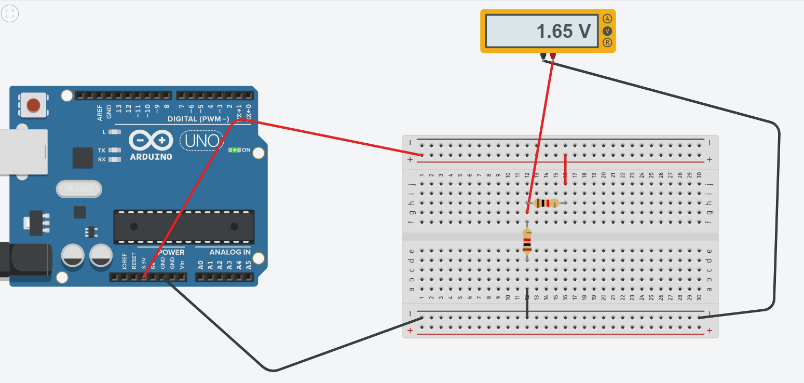

Class 3: Electronics and Tools
The first part of the assignment for the third class was to make a circuit on a breadboard using components from the kit. I made the circuit pictured below, using the two 1k Ω resistors to divide the voltage. I first attached the red wire to the 3.3 V on the microcontroller and connected it to the + on the breadboard, and then I attached the black wire to the GND port and connected it to the - on the breadboard. I then used more wires and two resistors to complete the circuit.


Once I had this circuit built, I used the multimeter to measure the voltages in the circuit. Before the resistors the voltage was 3.3 V, after the first one it was 1.65 V (half of the starting voltage), and after the second resistor it was 0 V. Once I figured out the voltages, I used Ohm's law to calculate the current in the spot in between the two resistors. Since the voltage was 1.65 V and the resistor was 1000 Ω, the current was 1.65 / 1000, which is 0.00165 A (1.65 mA).
The next part of the assignment was to simulate my circuit on TinkerCad, which is shown below. I replicated it exactly to make sure it would work.
The third part of the assignment was to use the Microcontroller Analog in (ADC) using the Arduino software to measure the voltage of a potentiometer in a circuit. The first thing I did was remove the resistors and add in the potentiometer, which would allow me to spin a dial to control the voltage. I connected a yellow wire from the A0 port on the microcontroller to spot in front of the middle leg of the potentiometer, allowing the voltage change to occur. I then opened the AnalogReadSerial Arduino code and altered the print statment to print the actual voltage instead of a number 1-1023. I edited it to this: Serial.println(sensorValue * 3.3) / 1024). Pictures of the new circuit, arduino code, and recorded voltage values can be seen below.